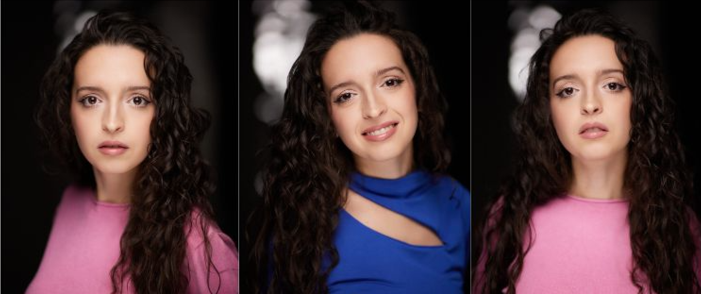

Come ho cominciato
Il mio primo approccio al teatro è avvenuto quando avevo solo 7 anni. Ho preso parte ad uno spettacolo messo in scena da una compagnia amatoriale. Lo spetacolo in questione era la fiaba di Peter Pan, e la piccola me ha interpetato il ruolo della sua fidata fatina, Trilly! Dopo quella esperienza, ho sempre preso parte a tutti i corsi pomeridiani di recitazione della mia scuola, sia alle scuole elementari che medie.
All'età di 13 anni scopro su facebook una piccola scuola di recitazione nella mia città, la "DitirammuLab" diretta da Elisa Parrinello. Lì studio per la prima volta con diversi insegnanti, imparo le prime tecniche di recitazione e anche altre discipline, come il canto e la danza popolare, ma soprattutto il tiptap. Mi diplomo a 17 anni.
Il percorso professionalizzante
Dopo 3 anni di pausa dal mondo dell'arte, capii quanto mi mancasse quel mondo e quanto io gli appartenessi. Decisi quindi che quello sarebbe stato il mio lavoro. Per far ciò, sentivo il bisogno di affrontare prima degli studi più approfonditi. Decisi dunque di tentare i casting di ammissione per la "PAS-Performing Art School", un'accademia di Musical Theatre. La scelta di studiare Musical era legata alla volontà di imparare quanto più possibile e su quanti più ambiti artistici possibili. Ho studiato così canto e stile, teoria musicale e solfeggio, danza modern, classica, contemporanea, hip hip e tip tap, dizione e doppiaggio, storia del teatro e del musical, direzione di palcoscenico, ma soprattutto varie tecniche di recitazioni, come il metodo Stanislasvkji, il metodo Strasberg ed il metodo Misner. Mi diplomo dopo 3 anni, nell'ottobbre 2024.